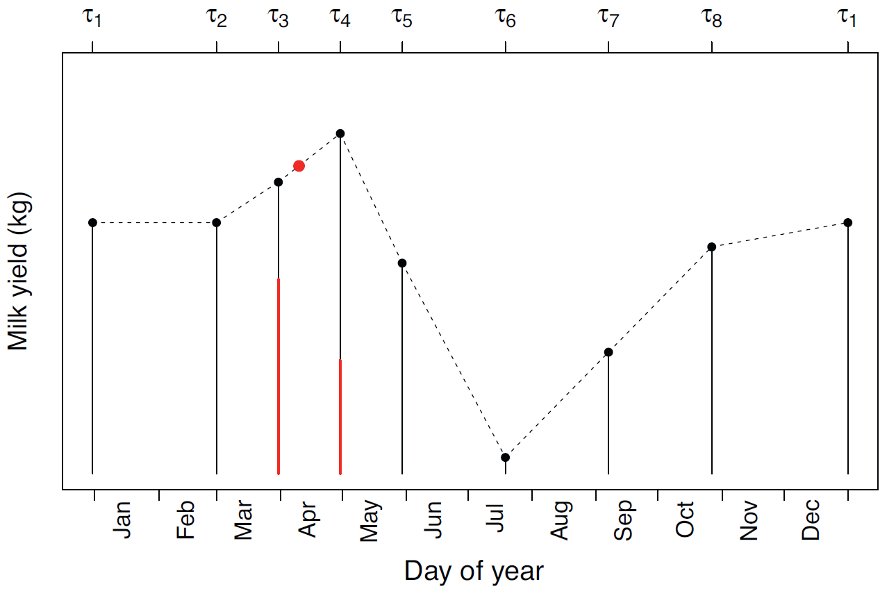
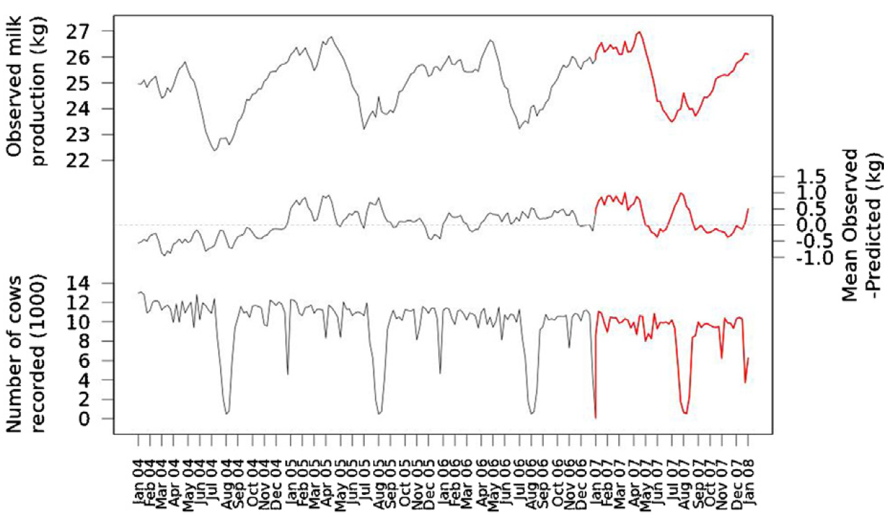
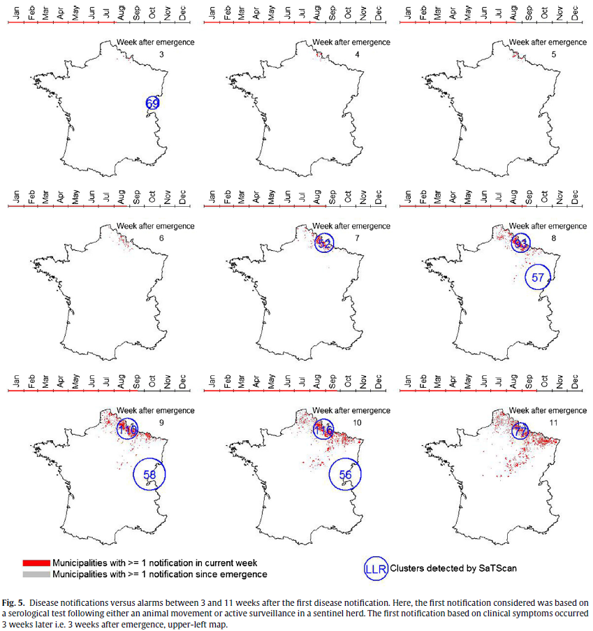
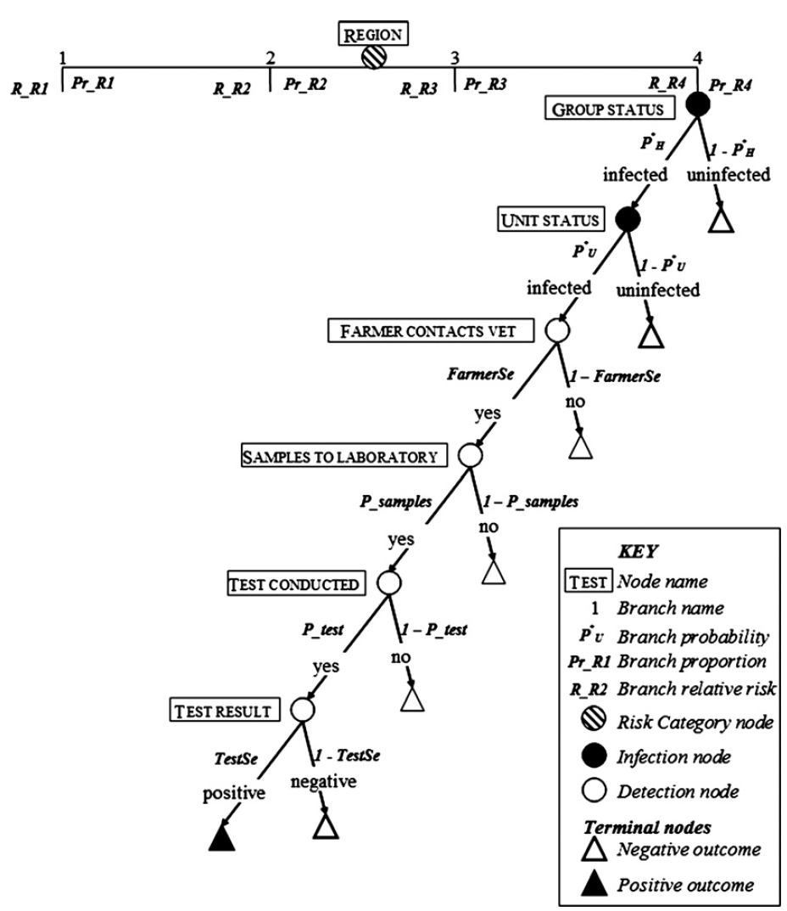
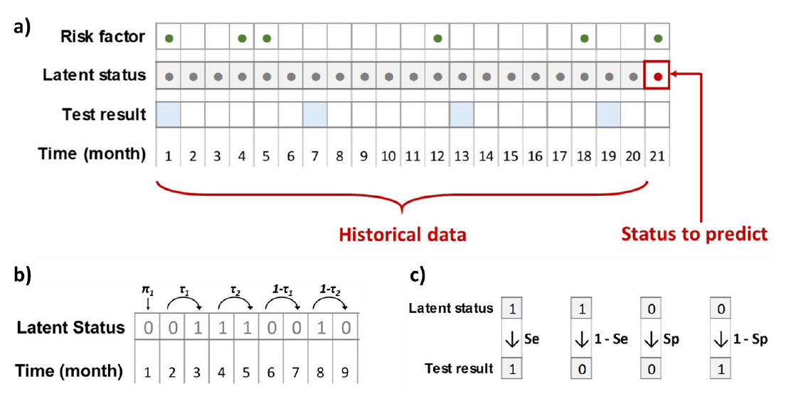
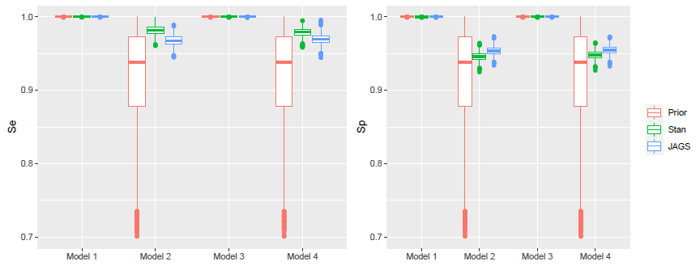
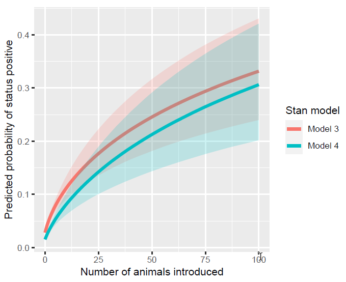
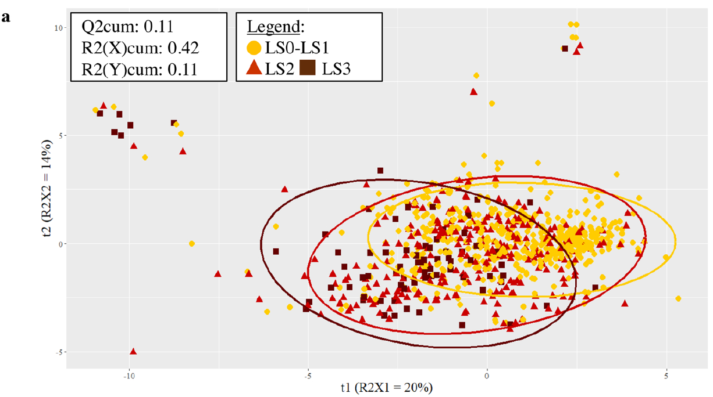
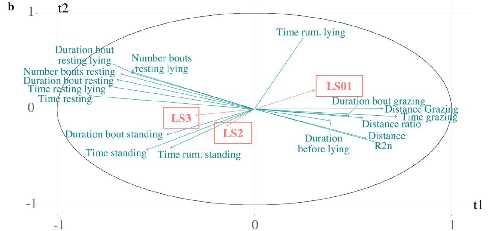

Approches épidémiologiques et statistiques pour la détection des troubles de santé et l’évaluation du bien-être chez les bovins
Habilitation à diriger des recherches
UMR BIOEPAR, Oniris, INRAE
15 juin 2023
Jury
- Cécile Chevrier, Directrice de recherche, INSERM Université Rennes 1
- Fabien Corbière, Professeur, École Nationale Vétérinaire de Toulouse
- Benoît Durand, Directeur de recherche, ANSES de Maisons-Alfort
- Marie-Pierre Etienne, Maîtresse de conférences HDR, Institut Agro Rennes-Angers
- Anne Philippe, Professeure, Nantes Université
Lien vers la présentation : https://aurmad.github.io/HDR/hdr.html
Lien vers le document écrit : https://hal.science/tel-04125958
Introduction
Parcours personnel et professionnel
- Doctorat en médecine vétérinaire (ENVN, 2001-2006)
- Thèse d’exercice vétérinaire à l’université de Warwick (GB, 2005) : Risque de mammite clinique en lactation selon la conduite de la période sèche chez la vache laitière
- Thèse d’université à l’université de Nottingham (GB, 2006-2009)
- An evaluation of milk recording, somatic cell counts and reproductive performance in a large cohort of dairy herds in England and Wales
Parcours personnel et professionnel
- Post-doctorat à l’université de Nottingham (GB, 2010-2011)
- Facteurs de risque de mammite au premier contrôle laitier de la lactation
- Post-doctorat à l’UMR BIOEPAR (Oniris, INRAE, 2011-2012)
- Coordination du volet français d’une étude européenne multicentrique sur les facteurs de risque de pancytopénie néonatale bovine
- Évaluation d’indicateurs et de méthodes pour la détection précoce de maladies vectorielles émergentes
- Maître de conférences en zootechnie bovine / épidémiologie à Oniris depuis 2012
Compétences développées
- Médecine vétérinaire :
- Épidémiologie et médecine de populations
- Maladies infectieuses et de production des bovins
- Statistiques :
- Modèles linéaires (généralisés) mixtes
- Inférence bayésienne
- Méthodes de réduction de dimension
- Méthodes de classification non-supervisée
- (Méthodes d’apprentissage automatique)
De quoi va-t-on parler ?
Elevage bovin laitier :
- Troupeaux de vaches pour la production et la vente de lait
- Typiquement 50 à 130 vaches par troupeau
- Animaux conduits en groupes (veaux, génisses, vaches \(\ldots\))
Troubles de santé avec différentes caractéristiques épidémiologiques
Des niveaux de bien-être difficiles à quantifier
Les questions qui se posent et les manières d’y répondre sont différentes selon les caractéristiques des troubles de santé
Maladies endémiques : quantifier pour maîtriser
- Maladie endémique : fréquemment présente dans une population, sans variation importante d’incidence au cours du temps
- Mammites, boiteries, maladies parasitaires \(\ldots\)
- Enjeux autour de ces maladies au niveau d’un troupeau :
- Diagnostiquer : quantifier la prévalence et décrire la dynamique
- Prévenir : identifier les animaux sains et les causes de maladie
- Éliminer : identifier les malades et les facteurs pronostics des traitements
Maladies émergentes : détecter précocement
- Maladie qui (ré-)apparaît dans un pays ou un territoire dans lequel elle était absente
- Fièvre catarrhale ovine, infection par le virus de Schmallenberg \(\ldots\)
- Enjeux autour de ces maladies :
- Infinité de maladies pouvant émerger \(\rightarrow\) impossible de tester pour tout!
- Détecter le plus précocement possible après l’émergence pour limiter la propagation et les conséquences
Maladie absente : sécuriser les échanges
- Maladie connue pour laquelle on veut prouver qu’on est indemne
- Enjeux autour de ces maladies :
- Rassurer les partenaires commerciaux sur le fait qu’il n’y aucun risque associé à l’achat d’animaux
- Quantifier pour chaque unité la probabilité que l’infection est absente
Bien-être animal : mesurer pour améliorer et rassurer
- Notion complexe à définir
- Historiquement, définition basée sur 5 libertés traduite en protocoles de mesure
- Plus récemment, définition Anses : état mental et physique positif lié à la satisfaction des besoins physiologiques et comportementaux de l’animal, ainsi que de ses attentes. Cet état varie en fonction de la perception de la situation par l’animal.
- La complexité de la définition complique la mesure
Types de problèmes étudiés et questions de recherche
| Type de maladie/entité | Type de question | Caractéristiques et difficultés méthodologiques |
|---|---|---|
| Maladie endémique | Diagnostic | Tests imparfaits ; données longitudinales |
| Prévention : identifier les facteurs de risque | Tests imparfaits ; associations non causales ; données manquantes | |
| Maladie émergente | Détecter précocement | Détection de phénomènes parfois inconnus ; évènements rares ; fausses alertes ; données : hétérogènes, longitudinales, de grand volume |
| Maladie absente | Prouver l’absence | Quantifier la probabilité d’un évènement absent ; inférence impossible ou difficile ; tests imparfaits |
| Bien-être animal | Quantifier un phénomène difficile à définir | Mesure d’un phénomène multifactoriel avec des composantes subjectives ; données hétérogènes |
Surveillance syndromique
Maladies émergentes
- Probabilité d’émergence de maladies infectieuse accrue en France et en Europe
- Réchauffement climatique : changement de répartition géographique de vecteurs
- Déforestation : contacts entre faune sauvage, animaux domestiques et humains
- Commerce international : diffusion des pathogènes et des vecteurs
Emergences de maladies vectorielles chez les bovins
- Fièvre catarrhale ovine
- Maladie virale à transmission vectorielle touchant les ruminants
- Symptômes : fièvre, troubles respiratoires, ptyalisme, œdème de la face, cyanose de la langue
- Initialement présente en Afrique et en Europe du Sud
- Émergence en Allemagne, Belgique et Pays-Bas en 2006
- Émergence en France en 2007
- Infection par le virus de Schmallenberg
- Maladie virale à transmission vectorielle touchant les ruminants
- Symptômes : fièvre, malformations fœtales, baisses de production laitière
- Émergence en Europe du Nord en 2011
- Virus inconnu avant son émergence
La surveillance syndromique pour la détection d’émergences
- Surveillance syndromique : collecte, construction et analyse automatisées en temps (quasi-)réel d’indicateurs spécifiques ou non spécifiques pour la détection précoce d’évènements sanitaires inhabituels.
- Travail conduit dans le cadre d’un projet ERA-NET avec partenaires néerlandais et belges.
- Objectif général : évaluer l’intérêt des données de production et de reproduction collectées chez les bovins laitiers pour la détection précoce de maladies à transmission vectorielle émergentes
Principes généraux
- Principes généraux de l’évaluation d’indicateurs pour la surveillance syndromique
- Identification des conséquences biologiques plausibles d’une émergence
- Identification des sources de données disponibles pour la détection
- Construction d’indicateurs à partir de ces données
- Développement de méthodes de détection d’anomalies spatio-temporelles
- Évaluation des performances des indicateurs sur données réelles ou simulées
Quelles mesures de performance ?
- Quels risques d’erreur ?
- Ne pas détecter une maladie alors qu’elle a émergé \(\rightarrow\) faux négatif
- Fonction de la sensibilité : \(Se = p(T^+|D^+)\)
- Détecter un signal trop longtemps après l’émergence, quand les conséquences sont déjà importantes
- Précocité : temps écoulé entre l’émergence et sa détection
- Détecter une anomalie alors qu’aucune maladie n’a émergé \(\rightarrow\) faux positif
- Fonction de la spécificité : \(Sp = p(T^-|D^-)\)
- Fausses alertes : importance de la valeur prédictive positive : \(VPP = p(D^+|T^+) = \frac{Se \pi}{Se \pi + (1 - Sp) (1 - \pi)}\)
Données de production et de reproduction
- Identification des bovins :
- Chaque bovin français a un numéro national à 10 chiffres
- Permet de croiser différentes bases de données
- Enregistrement des naissances, morts et mouvements entre exploitations
- Le contrôle laitier :
- Mesure mensuelle de quantité/composition du lait produit sur 24h
- Chaque mois, pour chaque vache en lactation d’un troupeau
- Payant et volontaire mais très répandu
- Données d’insémination artificielle :
- Utilisation de semence congelée pour la reproduction des vaches
- Enregistrement des inséminations \(\rightarrow\) suivi précis de la reproduction de chaque vache
Production laitière pour la détection des émergences : hypothèses
- Hypothèses :
- L’émergence d’une maladie à transmission vectorielle cause des baisses de production laitière chez les bovins atteints
- Ces baisses de production sont localisées dans l’espace et dans le temps et suivent la progression de l’infection
- De telles baisses de production sont détectables avec les données du contrôle laitier
- Les données collectées lors de l’émergence de la FCO en France en 2007 peuvent être utilisées pour l’évaluation d’indicateurs
Production laitière pour la détection des émergences : démarche
- Indicateur : calcul de productions laitières moyennes par troupeau par date de contrôle à partir des productions laitières quotidiennes à l’échelle de la vache
- Modèle de prédiction : Construction d’un modèle de prédiction des productions laitières attendues sur une période historique, avant l’émergence
- Différences observé-attendu : calcul des différences entre productions laitières observées et prédites par le modèle, sur la période de détection
- Détection d’agrégats spatio-temporels : utilisation d’une statistique de balayage
- Choix d’un seuil pour la détection d’anomalies : à partir des foyers de FCO notifiés choix d’un seuil permettant un bon compromis entre précocité de détection et nombre de fausses-alarmes.
Modèle de prédiction de la production laitière (1)
- Modèles linéaires (généralisés) mixtes très utilisés en épidémiologie animale
Exemple : modèle linéaire avec ordonnée à l’origine aléatoire … \[Y_{ij} = \beta_0 + \beta_1 x_{ij}^1 + \ldots + \nu_j + \varepsilon_{ij}\] \[\nu_{ij} \sim \mathcal{N}(0, \sigma{j}^2)\] \[\varepsilon_{ij} \sim \mathcal{N}(0, \sigma{ij}^2)\]
\(Y_{ij}\) : production laitière pour le troupeau \(i\) au temps \(j\) ; \(x_{ij}^k\) : valeur de la covariable \(k\) pour le troupeau \(i\) au temps \(j\) ; \(\beta_k\) : coefficient pour la covariable \(k\) ; \(\nu_j\) effet aléatoire troupeau ; \(\varepsilon_{ij}\) erreur résiduelle.
- Permettent de prendre en compte la structuration des données en plusieurs niveaux
Modèle de prédiction de la production laitière (2)
- Régression par morceaux
- Découpage de l’année en 8 périodes
- Covariables : jour de l’année au moment du contrôle
- Effet aléatoire élevage sur chaque coefficient

\[Y_{ij} = \sum_{k=1}^{8}I_k \left[ (\beta_k + \nu_k^j) \frac{d - \tau_k}{\tau_{k + 1} - \tau_k} + (\beta_{k+1} + \nu_{k+1}^j) (1-\frac{d - \tau_k}{\tau_{k + 1} - \tau_k}) \right] + \varepsilon_{ij}\] \[\nu_{k} \sim MVN(0, \Sigma_j) \] \[\varepsilon_{ij} \sim \mathcal{N}(0, \sigma{ij}^2)\]
Différences observé-attendu
- Émergence de la FCO en juillet 2007 \(\rightarrow\) pas de baisse notable de la production laitière

Agrégats spatio-temporels
- Statistique de balayage (SaTScan)
- Application sur différences entre productions observées et prédites agrégées aux niveaux de la commune et de la semaine
- En résumé : productions inférieures à l’attendu concomitantes de l’émergence mais beaucoup de fausses alarmes.

Encadrement et publications associés
- Encadrement :
- Thomas Lesuffleur, Master 2, 2012
- Publications majeures :
- Madouasse et al., 2013. Evaluation of a Continuous Indicator for Syndromic Surveillance through Simulation. Application to Vector Borne Disease Emergence Detection in Cattle Using Milk Yield. PLOS ONE 8, e73726.
- Madouasse et al., 2014. Use of monthly collected milk yields for the detection of the emergence of the 2007 French BTV epizootic. Preventive Veterinary Medicine 113, 484–491.
- Marceau et al., 2014. Can routinely recorded reproductive events be used as indicators of disease emergence in dairy cattle? An evaluation of 5 indicators during the emergence of bluetongue virus in France in 2007 and 2008. Journal of Dairy Science 97, 6135–6150.
Perspectives
Intérêt sans doute limité de tester de nouveaux indicateurs/sources de données chez les bovins
Approche envisagée :
- Simulation de scénarios d’émergence probables et de leurs conséquences pour l’identification de sources de données mobilisables et de méthodes de détection
- A construire
Un modèle de Markov caché pour estimer la probabilité d’absence d’une maladie
Quantifier la probabilité d’absence d’une maladie
- Problème posé dans le projet STOC free
- Enjeux :
- Protéger les pays/troupeaux indemnes de l’introduction d’un agent infectieux via l’introduction d’animaux infectés
- Particularité du problème :
- Si la maladie est détectée chez > 0 animal / unité, elle est présente ; sinon quelle probabilité que la maladie soit présente mais n’ait pas été détectée ?
- Impossibilité d’évaluer la probabilité que quelque chose n’existe pas \(\rightarrow\) pas réfutable1
- Nécessité de poser la question en termes de Si l’infection était présente à la prévalence x, quelle serait la probabilité que le système de surveillance la détecte ?
Quelles mesures de performance ?
- Hypothèse habituelle de spécificité parfaite \(\Rightarrow Sp = p(T^-|D^-)=1\)
- Si test positif on reteste jusqu’à confirmation de vrai positif \(\rightarrow\) maladie présente, au risque d’abaisser la sensibilité.
- Quels risques d’erreur ?
- Ne pas détecter une maladie alors qu’elle est présente \(\rightarrow\) faux négatif
- Sensibilité du système de surveillance : \(Se = p(T^+|D^+)\)
- Importance de la valeur prédictive négative :
- Probabilité que la maladie soit présente bien qu’on ne l’ait pas trouvée
- \(VPN = p(D^-|T^-) = \frac{Sp (1 - \pi)}{Sp (1 - \pi) + (1 - Se) \pi}\)
- Si \(Sp = 1\), \(VPN = \frac{1 - \pi}{1 - Se \pi}\)
Evolution des méthodes pour quantifier la probabilité d’absence d’une maladie
- Initialement : taille d’échantillon pour obtenir un certain niveau de confiance dans l’absence d’infection :
- Si présente à prévalence faible (design prevalence) avec hypothèse de population homogène et grande (Cannon et Roe, 1982)
- Incorporation de l’imperfection des tests (Cameron et Baldock, 1988a)
- Incorporation de structure des populations testées (Cameron et Baldock, 1988b)
- Evolution vers la détermination de la sensibilité des systèmes de surveillance et de la probabilité d’absence d’infection si elle n’a pas été détectée
- Méthode scenario tree (Martin et al. 2007)
La méthode scenario tree
- Méthode de référence
- Simulations stochastiques :
- Structure de la population, stratifiée selon hypothèses sur facteurs de risque d’infection
- Procédures de tests
- Hypothèses sur caractéristiques des tests
- design prevalence
- Permet d’estimer la probabilité d’avoir obtenu des résultats de tests négatifs uniquement, si les hypothèses du modèles étaient vraies

Le projet STOC free
- Objectif du projet :
- Développer un cadre d’estimation de la probabilité d’être indemne d’infection permettant de prendre en compte la diversité des programmes de surveillance.
- Application à l’infection par le virus de la diarrhée virale bovine (BVD) en élevage bovin laitier.
- Développement d’un modèle de Markov caché de prédiction du statut élevage à partir de données sérologiques de lait de tank
- Application du modèle dans 3 autres pays européens
Modèle de Markov caché
- Modèle de Markov caché \(\rightarrow\) Hidden Markov Modèle (HMM) en anglais
- Hypothèses du modèle sur la variable d’intérêt (infection / absence d’infection) :
- Discrète : \(k\) états
- Latente : état vrai mesuré de façon imparfaite \(\rightarrow\) tests avec sensibilité et spécificité < 1
- Temps discret avec dynamique Markovienne : état latent au temps \(t\) ne dépend que de l’état au temps \(t-1\).
- Pas de temps mensuel
- Prédiction de probabilité pour un élevage d’être positif (infecté/séropositif) au dernier pas de temps
\[S_1 \sim Bernoulli(\pi_1)\] \[S_t \sim Bernoulli(\pi_t) \hspace{.25cm} \forall t > 1\] \[ \pi_t = \begin{cases} \tau_1 & \text{si } S_{t-1}=0 \\ \tau_2 & \text{si } S_{t-1}=1 \end{cases} \]
Si facteurs de risques de nouvelle infection \(\rightarrow\) \(ln(\frac{\tau_1}{1-\tau_1})=XB\)
\[T_t \sim Bernoulli(p(T_t))\]
\[ p(T_t) = \begin{cases} 1 - Sp & \text{si } S_t = 0 \\ Se & \text{si } S_t = 1 \end{cases} \]

Application du modèle à la BVD en Loire-Atlantique (1)
- Évaluation du modèle :
- Estimation des paramètres avec JAGS ou Stan
- Avec ou sans facteur de risque
- Avec différents a priori sur les valeurs informatives des tests

Application du modèle à la BVD en Loire-Atlantique (2)
- Ajout d’un facteur de risque :
- Permet en principe une détection plus précoce
- Ici, probabilité de séroconversion augmente avec le nombre de bovins introduits

Encadrements et publications associées
- Encadrements :
- Mathilde Mercat, Ph.D. 2018 - 2022
- Publications majeures :
- Madouasse et al., 2022. A modelling framework for the prediction of the herd-level probability of infection from longitudinal data. Peer Community Journal 2.
- Mercat et al, 2022. Capacity of a Bayesian model to detect infected herds using disease dynamics and risk factor information from surveillance programmes: A simulation study. Preventive Veterinary Medicine 200, 105582.
- van Roon et al., 2022. Output-based assessment of herd-level freedom from infection in endemic situations: Application of a Bayesian Hidden Markov model. Preventive Veterinary Medicine 204, 105662.
Capteurs et méthodes pour l’évaluation du bien-être chez les bovins
Les boiteries des bovins comme modèle
Boiteries : altération de la démarche dues à des lésions podales le plus souvent


Les boiteries des bovins comme modèle
- Impact sur les 5 libertés utilisées pour la définition historique du bien-être
- Absence de douleur, de lésions et de maladie : maladie définie par altération de la démarche due à douleur
- Absence de faim, de soif et de malnutrition : altération de la capacité à se déplacer pour aller se nourrir
- Absence de peur et de détresse : impact sur les interactions sociales, notamment comportements agonistiques
- Liberté d’expression d’un comportement normal de l’espèce : difficultés à se déplacer, se lever, se coucher, exprimer les comportements de chaleurs
- Absence de stress physique et/ou thermique : confort de couchage comme facteur de risque de boiterie
- Prévalence des boiteries d’environ 20% (Thomsen et al., 2023)
- Sous-détection par les éleveurs (Cutler et al., 2017)
Capteurs pour l’étude du comportements des bovins
Capteurs de plus en plus utilisés en élevage \(\rightarrow\) élevage de précision
Projet Vagabond :
- Accéléromètres et GPS pour l’étude du comportement des bovins au pâturage
- Thèse de Lucile Riaboff, co-encadrement ESEO Angers, ESA Angers, BIOEPAR. Financement Terrena et Régions Pays de la Loire.
Accéléromètres 3D :
- Mesure de l’accélération instantanée sur 3 dimensions
- Placés dans colliers \(\rightarrow\) mesure des profils de mouvement spécifiques de certains comportements
- Etape de prédiction des comportements à partir du signal brut \(\rightarrow\) développements méthodologiques
GPS \(\rightarrow\) géolocalisation
Vue d’ensemble
Figure par Lucile Riaboff, tirée de Riaboff et al., 2022
Utilisation de capteurs pour l’étude et la détection des boiteries au pâturage - Riaboff et al., 2021
- Chez 68 vaches dans 3 troupeaux pâturants
- Prédiction des comportements à partir de données accélérométriques et géolocalisation à partir de GPS
- Notation visuelle des boiteries : notes de 0 à 3
- Évaluation des variables de comportement et de distances parcourues qui discriminent les différents scores de boiteries
- Pour évaluation de l’impact et détection des boiteries à partir des données mesurées par les capteurs
- Utilisation de la méthode Partial Least Squares - Discriminant Analysis (PLS-DA)
- Les variables incluses ne permettent pas une discrimination suffisante pour la détection des boiteries

- Boiteries : \(\searrow\) temps de pâturage, \(\nearrow\) temps immobile, \(\searrow\) distances parcourues

Encadrements et publication associée
- Encadrements :
- Lucile Riaboff : Ph.D., 2018 - 2021 ; Post-doctorat, 2021
- Charles-Elie Petiot : Thèse de doctorat vétérinaire, 2018
- Publication majeure :
- Riaboff et al., 2021. Identification of discriminating behavioural and movement variables in lameness scores of dairy cows at pasture from accelerometer and GPS sensors using a Partial Least Squares Discriminant Analysis. Preventive Veterinary Medicine 193, 105383.
Perspectives
- Projet WAIT4 : Welfare: Artificial Intelligence and new Technologies for Tracking key indicator Traits in animals facing challenges of the agro-ecological Transition
- Animation du WP3 : Determining the impacts of agroecological transition on animal welfare
- Thèse WAIT4 / PACE-COW :
- Caractérisation du lever et du coucher pour la détection et l’étude des boiteries
- Impact des boiteries sur les interactions sociales
- Collaboration avec équipe LINK, AgroParisTech, INRAE (MIA)